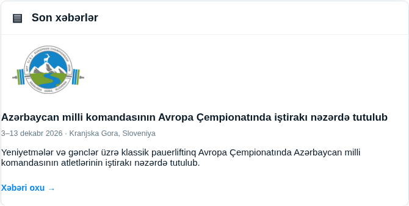
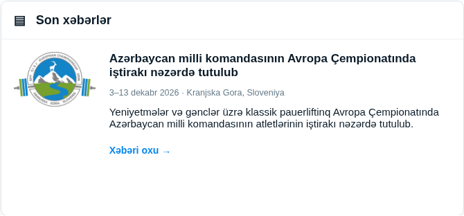
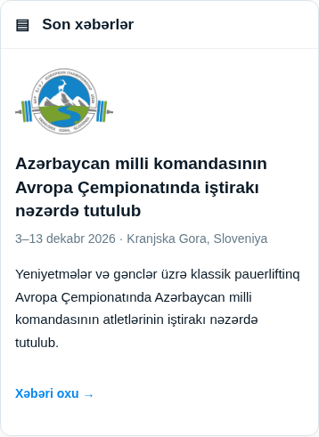

Son xəbərlər
Consistent padding, contained text and responsive image alignment. Existing typography and content are preserved.
Desktop


Mobile

Consistent padding, contained text and responsive image alignment. Existing typography and content are preserved.


